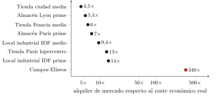
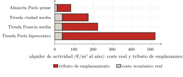

— Traducción por IA — Claude Fable 5 (Anthropic)
Tercera parte — Medición empírica de la captación · Capítulo 10
10 La renta de actividad y la cadena de producción: el trabajador
El capítulo precedente midió el tributo que el habitante paga directamente, en su alquiler: 126 000 millones. Pero el habitante es también un trabajador y un consumidor, y es por esta segunda vía por la que el tributo lo alcanza una vez más, indirectamente, y las más de las veces sin que lo sepa. El comerciante que vende, el industrial que produce, el almacén que almacena pagan también un alquiler por los muros que ocupan; y ese alquiler no lo soportan: lo repercuten aguas abajo, en el precio de las mercancías, hasta el consumidor final. Es el mecanismo que el capítulo 5 estableció en derecho1 y que ahora hay que cifrar. Se medirá primero esta renta de actividad; luego se examinará, sin confundirla con ella, una extracción vecina que el trabajador soporta igualmente: los márgenes apilados en la cadena que produce los edificios y sus materiales.
10.1 El tributo sobre los locales de actividad
La ley es la misma que en el capítulo 9, pero llevada más lejos, porque el valor de emplazamiento está allí aún más concentrado. Se lee en la proporción entre el alquiler de mercado y el coste económico real del local — edificación amortizada, mantenimiento, suelo contado por nada. Para un local comercial, ese coste real es del orden de 39 euros el metro cuadrado y por año; para un almacén o un local industrial, del orden de 12.2
Comparemos con los alquileres reales. Una tienda de ciudad media se alquila ya a entre cuatro y seis veces ese coste; en el corazón de París, a trece veces.3 Y allí donde la centralidad alcanza su colmo, la proporción se vuelve vertiginosa: en los Campos Elíseos, el alquiler prime supera los doce mil euros el metro cuadrado por año, es decir, del orden de trescientas a cuatrocientas veces el coste real del local.4 No es que allí se construya de otro modo; es que el valor de la dirección, fabricado por la metrópoli entera, lo cobra allí el solo propietario del suelo. La logística y la industria confirman la regla sobre emplazamientos menos prestigiosos pero igual de disputados: un almacén prime de Île-de-France se alquila a siete veces su coste real, un local industrial de Île-de-France a entre nueve y catorce veces (figura 1.1).5

En todos los casos, la descomposición es la del capítulo 9, pero aún más desequilibrada: el coste real del local no es sino una delgada fracción del alquiler, y todo el resto es tributo de emplazamiento (figura 1.2). Para una tienda parisina de centro urbano, la edificación y su mantenimiento cuentan por menos de una décima parte de lo que se paga; en los Campos Elíseos, por unas milésimas.

Esta renta, el comerciante o el industrial la pagan; pero la trasladan a sus precios, y es el consumidor quien, en último término, la paga. El tributo de emplazamiento de una tienda se encuentra en el precio de lo que allí se compra; el de un almacén, en el precio de lo que uno se hace entregar desde él. El trabajador que creía no pagar más que un alquiler (el de su vivienda) paga en realidad, sin verlo, una fracción de todos los alquileres comerciales del circuito que lo abastece.
10.2 ¿Cuánto? — y con qué margen de incertidumbre
Queda totalizar, y el método es simple en su principio: multiplicar, para cada segmento, la superficie del parque por el tributo por metro cuadrado (el alquiler menos el coste real). Pero tropieza aquí con un límite: la superficie del parque edificado de actividad se conoce mal, bastante peor que los alquileres. La cifra de este capítulo es, pues, por construcción, menos firme que la del capítulo 9, que reposaba sobre los agregados del SDES.
Se la establecerá por defecto, tomando cada vez la hipótesis baja. El parque comercial, según el catastro, es del orden de 330 a 365 millones de metros cuadrados de tiendas; el parque logístico, de 89 a 93 millones para los solos almacenes de más de diez mil metros cuadrados.6 Poniendo en relación el tributo solo con la fracción de ese parque efectivamente alquilada a un tercero rentista (y no con el stock entero, del que una parte está ocupada por su propietario), se obtiene una renta de actividad del orden de 36 000 millones de euros al año: unos 24 000 del comercio, 5 000 de la industria, 4 000 de la logística y 3 000 en concepto de pas-de-porte y derechos de arrendamiento. Estos dos últimos merecen unas palabras, pues muestran la renta en estado puro: el pas-de-porte es la suma que un comerciante entrega al arrendador, por adelantado y además del alquiler, para obtener el local; el droit au bail, su equivalente entregado al inquilino saliente que cede su lugar. Corrientemente de seis meses a dos años de alquiler, pagados antes de haber vendido nada — y que no pagan ni un servicio, ni unas existencias, ni unos muros: el derecho de entrar en el emplazamiento, cobrado al contado.7
Este número es más frágil que los 126 000 millones de la vivienda, y su eslabón débil es el parque comercial: siendo la superficie real de las tiendas más de dos veces superior a la estimación sobre la que está calculado, la cifra de 24 000 millones para el comercio es, si se mantienen los mismos alquileres, una cota inferior mucho antes que un techo.8 Así pues, se dará este total por lo que es: una estimación central, prudente, en una horquilla que se sitúa entre 30 000 y 55 000 millones. Añadida a los 126 000 millones de la vivienda, lleva el tributo del suelo medido a alrededor de 162 000 millones de euros al año, un montante del que el capítulo 11 hará la suma y extraerá la ley.
10.3 La cadena de producción: una exacción vecina, que nos guardaremos de confundir
Los alquileres de actividad no son la única exacción que el trabajador soporta: paga también, en el precio de los materiales y de los productos, los márgenes que recauda la larga cadena de intermediarios que los fabrica y los distribuye. La constatación es nítida, a condición de no clasificarla donde no tiene su lugar.
El hecho, primero. Entre el precio de salida de fábrica de un material de construcción y su precio al consumidor francés, la proporción va corrientemente de tres a cerca de catorce, con una mediana en torno a cinco.9 El margen no se aloja en cualquier parte: es delgado en los dos extremos que tocan el edificio (el promotor y la empresa constructora no ganan más que unos puntos, el distribuidor de bricolaje apenas más en Francia) y grueso en el medio, entre los fabricantes de materiales, que son oligopolios.10 En total, el sobreprecio imputable al capital de esta cadena es del orden de algunas decenas de miles de millones; su parte propiamente «capital» (una vez restadas la logística, la certificación, los salarios, que son costes reales) ronda los quince mil millones.
El lugar de esta constatación, después. Esta extracción no es renta del espacio (es parasitismo capitalista clásico), y por tanto no se la puede agregar a ella. El capítulo 1 trazó la línea: el suelo no se produce, y eso es lo que hace del tributo del suelo una exacción sin contrapartida. Un disyuntor, en cambio, se produce; un saco de cemento se produce. El margen oligopolístico que los encarece pertenece al beneficio del capital sobre bienes reproducibles, gobernado por la competencia y la posición de mercado — no a la no-reproducibilidad del suelo. Confundirlo con la renta del suelo sería cometer exactamente el error de categoría que toda la parte II denunciaba: naturalizar una relación social en otra. Por eso se nombra esta extracción, se calibra su orden de magnitud, pero se la mantiene fuera del total del tributo del suelo. Es una prima de este, no un miembro.11
Balance
El tributo sobre el espacio no pesa solamente sobre el habitante: pesa sobre el trabajador, por el alquiler de los lugares donde se produce, se almacena y se vende, que paga sin verlo en el precio de todo lo que consume. Esta renta de actividad (del orden de 36 000 millones de euros al año, estimación prudente y más frágil que la de la vivienda) lleva, añadida a los 126 000 millones del capítulo 9, el tributo del suelo francés medido a alrededor de 162 000 millones. Al lado, y distinta, otra extracción grava el precio de los bienes: los márgenes de la cadena que produce lo edificado. Se la ha nombrado y medido, pero mantenido fuera de la cuenta, porque pertenece al beneficio sobre cosas producidas, no a la renta sobre un suelo que no lo es.
Capítulo 5: el capitalista que alquila su tienda paga un peaje a su arrendador, pero su posición social no se define por ello, pues lo repercute sobre el usuario final. La incidencia última de la renta de actividad recae, pues, sobre el consumidor — es decir, sobre el trabajador.↩︎
Cálculos análogos a los del capítulo 9: edificación comercial ≈ 1 500 €/m² amortizada sobre 50 años más el mantenimiento, es decir ≈ 39 €/m²/año; almacén ≈ 500 €/m², local industrial ≈ 400 €/m², es decir ≈ 12 €/m²/año. Costes de construcción en orden de magnitud; el suelo, gratuito por hipótesis, es precisamente lo que el mercado hace pagar además.↩︎
Alquileres comerciales: (Valoris Real Estate 2024) (hipercentro de París ≈ 525 €/m²/año, es decir ≈ 13×); tienda media de Francia ≈ 200–250 €/m²/año, es decir ≈ 6×. El coste de la edificación no varía en un factor trece entre una calle concurrida y una calle ordinaria; solo varía el tributo de emplazamiento.↩︎
(Cushman & Wakefield 2024): alquiler prime de los Campos Elíseos 12 519 €/m²/año (5.ª arteria mundial); Knight Frank da hasta 16 000. La proporción (de 320× a 410× según la fuente) es estable: se retiene «del orden de 300 a 400×». Es la renta de monopolio de Harvey llevada a su colmo (capítulo 4): la dirección, producida por la ciudad entera, captada en estado puro por el tenedor de un título.↩︎
Logística: (CBRE France 2024) (Île-de-France 84 €/m²/año, Lyon 67; proporciones 7× y 5,4×). Locales de actividad de Île-de-France: del orden de 100 a 180 €/m²/año (proporciones de 9 a 14×); dato de mercado menos firme que el precedente, a tomar como orden de magnitud.↩︎
Comercio: (Cérema 2023) (ficheros catastrales 2021; las categorías «tiendas» del catastro suman ≈ 330–365 millones de m² según el perímetro retenido). Logística: (Service des données et études statistiques (SDES) 2025) (93 millones de m² a finales de 2024 para los almacenes ≥10 000 m², quedando excluida la cola de los más pequeños). El parque industrial, en cambio, no cuenta con ninguna medida de superficie que haga autoridad — y ello, estructuralmente: al establecerse el valor de alquiler de los locales industriales «en las cuentas de la empresa» (método contable, art. 1499 del código general de impuestos francés; (Direction générale des finances publiques (DGFiP) 2024)), la administración no necesita registrar su superficie, y no lo hace. El Cérema advierte por lo demás que esa superficie, en los ficheros catastrales, «no está […] necesariamente bien consignada» y que es «a menudo poco fiable» (Cérema 2024). Nos atenemos, pues, a un orden de magnitud — del orden de 100 millones de metros cuadrados, en una horquilla de 70 a 150 — reconstruido no a partir de una estadística de superficie, que no existe, sino del recuento de los edificios industriales por la DGFiP: unos 200 000 (Direction générale des Finances publiques 2023).↩︎
El pas-de-porte asciende corrientemente a seis meses o dos años de alquiler; pero es un uso profesional, libremente negociado, no una estadística publicada (Bpifrance Création 2024): los 3 000 millones de euros retenidos son un orden de magnitud. Sobre el conjunto, la línea más sólida es la logística (alquileres firmes, parque medido); la más incierta, la industria (parque desconocido).↩︎
El catastro da ≈ 342 millones de m² allí donde el cálculo retiene 150. Corregir el parque al alza, sin restar nada al alquiler ni a la parte alquilada, llevaría la captación comercial bastante más allá de los 24 000 millones. Se ha preferido la hipótesis baja: el perímetro retenido es el de los locales efectivamente alquilados a un rentista, el más defendible, y el más conservador.↩︎
Cuadro comparativo establecido a partir de los precios de salida de fábrica (Europa, o FOB China) y de los precios de venta al público franceses (Castorama, Leroy Merlin): cemento 3,9×, acero para hormigón 3,3×, azulejo 6×, disyuntor modular 13,8×; mediana 4,7×, media 5,7×. La proporción crece con el carácter manufacturado, pequeño y transportable del producto — es decir, con la longitud de la cadena de intermediarios.↩︎
Márgenes de explotación 2024: Saint-Gobain 11,4 % (Compagnie de Saint-Gobain 2025), Schneider Electric 18,6 % (Schneider Electric 2025), Legrand 20,5 %, Holcim 19,1 % — contra ≈ 5,9 % para la distribución de material eléctrico (Rexel 2025) y ≈ 2,4 % para el bricolaje en Francia (Kingfisher plc 2025). El margen se concentra allí donde la posición de mercado está más protegida.↩︎
Un solo hilo la ata de veras a él: el alquiler de los almacenes y tiendas que esos distribuidores ocupan ellos mismos se encuentra en sus precios — pero ese alquiler ya está contado en la renta de actividad de la sección precedente. Agregarlo una segunda vez bajo la etiqueta «cadena» sería un doble cómputo.↩︎